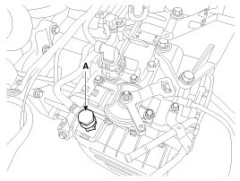
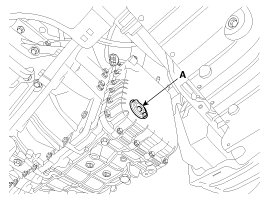
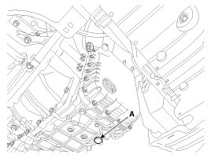

Repair Procedures
Service Adjustment Procedure
Oil level Check
NOTE:
A check of Automatic Transaxle Fluid (ATF) level is not normally required during scheduled services. If an oil leak is found, perform the oil level check procedure after repairs are completed.
CAUTION:
When checking the oil level, be careful not to enter dust, foreign matters, etc. from fill hole.
1. Remove the eyebolt (A).
Eyebolt tightening torque:
2.9 - 4.9 N.m (0.3 - 0.5 kgf.m, 2.2 - 3.6 lb-ft)
2. Add ATF SP-IV 700cc to the ATF injection hole.

3. Start the engine. (Don't step on brake and accelerator simultaneously.
4. Confirm that the temperature of the Automatic Transaxle(AT) oil temperature sensor is 50 - 60°C(122 - 140°F) with the GDS.
5. Shift the select lever slowly from "P" to "D", then "D" to "P" and repeat one more at idle.
CAUTION:
Stop in each gear position for 3 seconds.
6. Lift the vehicle, then remove the oil level plug (A) from the valve body cover.

CAUTION:
At this time, the vehicle must be at a level state.
7. If the oil flows out of the overflow plug in thin steady stream, the oil level is correct.
Then finish the procedure and tighten the oil plug.
NOTE:
Oil level check (excess or shortage) method
- Excess: Oil flows out in thick stream.
- Shortage: No oil flows out of the overflow plug.
CAUTION:
If there is no damage at the automatic transaxle and the oil cooler, the oil cooler hose, transaxle case, valve body tightening state are normal, ATF must drip out after performing above 1 to 7 procedures. After performing Steps 1 to 7, if the oil doesn't flow out in a thin steady stream, inspect the transaxle for an oil leak. If no oil leaks are found, perform Steps 2 - 7 again.
CAUTION:
Replace the gasket of the oil level plug and use new one whenever loosening the oil level plug.
Oil level plug tightening torque:
Tightening up stopper
8. Put down the vehicle with the lift and then tighten the eyebolt.
Replacement
NOTE:
ATF of the 6-speed automatic transaxle does not need to be replaced for Normal Usage. If the vehicle is used for any of the Severe Usage conditions listed below, replace the Automatic Transaxle Fluid (ATF) every 60,000 miles.
Severe usage is defined as
- Driving in rough road (Bumpy, Gravel, Snowy, Unpaved road, etc)
- Driving in mountain road, ascent/descent
- Repetition of short distance driving
- More than 50% operation in heavy city traffic during hot weather above 32°C(89.6°F).
- Police, Taxi, Commercial type operation or trailer towing, etc
1. Remove the drain plug (A) and drain the ATF totally. Reinstall the drain plug.

Drain plug tightening torque:
38.2 - 48.1 N.m (3.9 - 4.9 kgf.m, 28.2 - 35.4 lb-ft)
CAUTION:
The gasket of the drain plug use new one.
2. Fill the oil about 5 liters through eyebolt.
3. Check the oil level.